A1-5 How to adjust about vacuum sensor ( 5 )
Vacuum sensor adjustment for NS-8000 type ZSE10 on Input arm, Output arm and Index unit
Vacuum sensor: Operating part
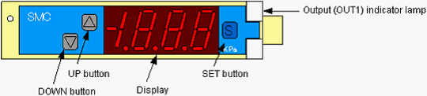
♦ Key Lock Function
This function prevents wrong operations such as changing the setting value.
As the default, the key operation is locked.
To unlock the key operation
1. Press the SET button for more than five seconds in the Measurement mode.
2. It displays “LoC”.
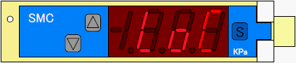
3. Press the UP or DOWN button and display “UnL” (unlock).
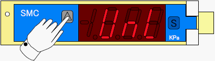
4. Press the SET button.
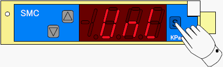
It unlocks the key operation and returns to the Measurement mode.
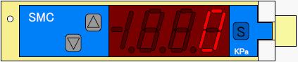
To lock the key operation
1. Press the SET button for more than five seconds in the Measurement mode.
2. It displays “UnL”.
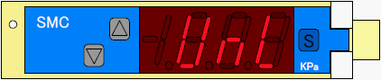
3. Press the UP or DOWN button and display “LoC” (lock).
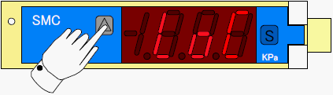
4. Press the SET button.
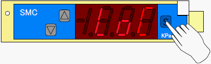
It locks the key operation and returns to the Measurement mode.
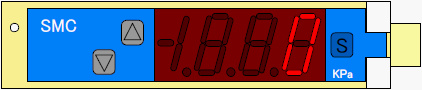
♦ Basic Setting
1. Press the SET button once.
It switches to the Pressure Setting Mode and displays “P_1” (n_1) and setting value alternately.
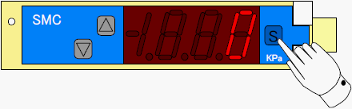
2. Set the value of “P_1” (n_1) using the UP and DOWN buttons.
Basic setting value is −50 KPa. (Default value)
To decrease the value (to increase the negative pressure), press the DOWN button.
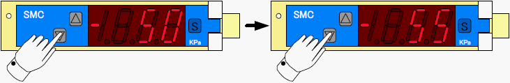
To increase the value (to decrease the negative pressure), press the UP button.
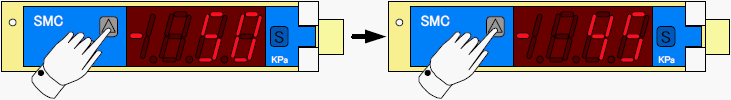
3. Press and hold the SET button for 3 sec or more. It returns to the Measurement mode.
4. Confirm that it displays a negative pressure lower than −50 KPa without device (e.g. − 25
KPa) and the Output (OUT1) indicator lamp (green) is OFF.
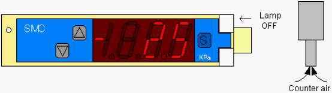
5. While picking up a device, confirm that it displays a negative pressure higher than −50 KPa
(e.g. − 78 KPa) and the Output (OUT1) indicator lamp (green) is ON.
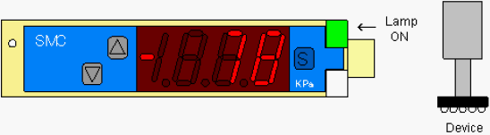
* For small size devices, the pickup nozzle has a smaller diameter, and therefore, the negative
pressure difference between with and without the device is small. With this, the detection
can be unstable (or impossible) with the Basic Setting above. In this case, change the P1
value.
<Example> With the device: −75 KPa Without the device: −52 KPa
↓
Change the P1 value to −60 KPa
♦ Zero Clear
When it doesn’t display zero even if the vacuum is OFF, clear the value to zero.
To clear the value to zero, press the both UP and DOWN buttons together for one second.
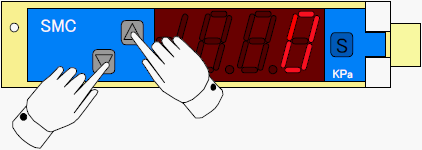
[Reference] Settings
The following table shows the default settings.
|
Item |
Default setting |
|
[F0] Unit switching function (Un1 <-> PA) |
KPa |
|
[F1] OUT1 configuration item Output mode Output inversion Pressure setting Hysteresis |
Hysteresis mode Inverted output −50.0 5.0 |
|
[F2] OUT2 configuration item |
- hy5 |
|
[F3] Response time (rE5) |
2.5 ms |
|
[F4] Auto preset function |
OFF |
|
[F6] Display value fine adjustment |
0% |
|
[F11] Display resolution capability |
100 partitioning |
|
[F80] Power-saving mode |
OFF |
|
[F81] Passcode |
OFF |
|
[F90] All functions setting |
OFF |
|
[F97] Copy function |
OFF |
|
[F98] Output confirmation |
Normal |
|
[F99] Default restoration |
OFF |
To check or change the settings, switch to the Function Selection mode.
1. Press the SET button for more than two seconds.

It displays “F 0”.
2. Switch the setting items using the UP and DOWN buttons (“F 0” to “F99”).
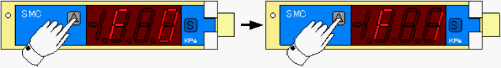
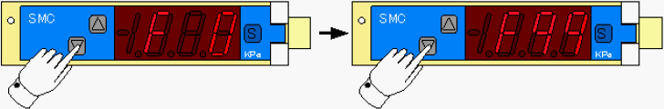
3. When you change the function setting, select the item (“F 0” to “F99”) and press the SET
button once.
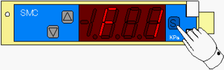
It switches to the Setting mode and displays the setting value.
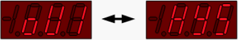
4. Change the setting value using the UP or DOWN button.
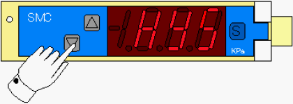
5. When the setting is fixed, press the SET button for more than two seconds to return to the
Measurement mode.
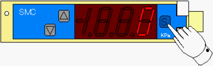